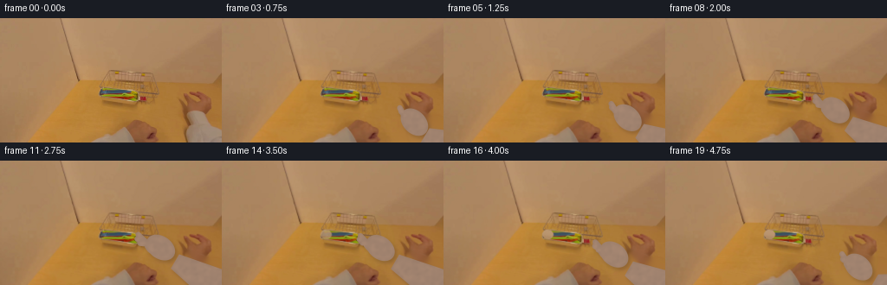
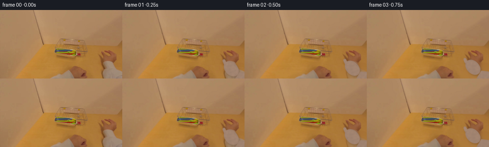
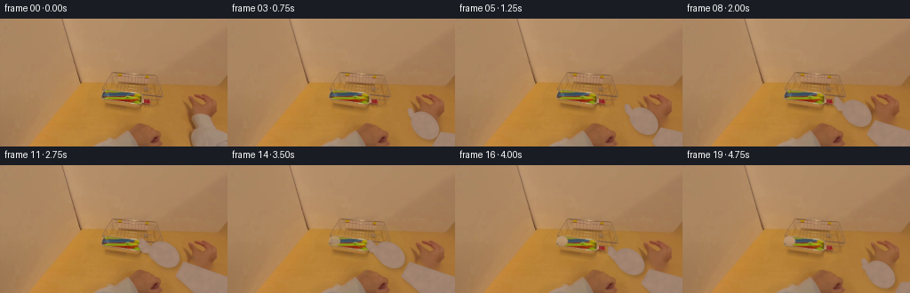
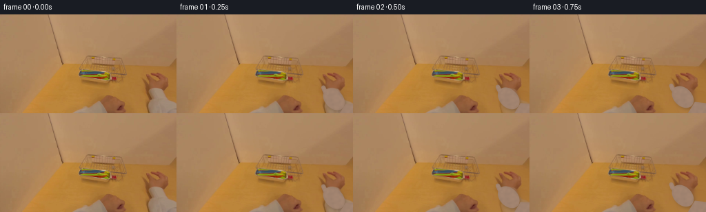

CODING AGENTS AS PIXEL WORLD MODELS
traex/GPT-5.6-Sol · common50_0016
点击播放 · 原生 RGB 像素
逐轮保存的候选
回放视频、检查图与代码变化。
每份候选均可单独播放。实际图片检查记录在下方工具轨迹中。
候选 01播放与检查图
点击播放 · 原生 RGB 像素


展开代码变化
--- 上一保存版本
+++ 本次保存版本
@@ -0,0 +1,224 @@
+from pathlib import Path
+import numpy as np
+import cv2
+from PIL import Image
+import artifact_io
+
+CASE_DIR = Path(__file__).resolve().parent
+W, H, SS = 256, 144, 4
+rng = np.random.default_rng(19)
+first = np.asarray(Image.open(CASE_DIR / 'first_frame.png').convert('RGB'), dtype=np.uint8)
+assert first.shape == (H, W, 3)
+
+# A clean plate for the part of the table initially occupied by the entering hand.
+# Telea is used only on that local area; all of the tray and utensils stay original.
+old_hand = np.zeros((H, W), np.uint8)
+cv2.fillPoly(old_hand, [np.array([[214,105],[226,104],[241,111],[255,119],
+ [255,143],[198,143],[202,134],[208,124]], np.int32)], 255)
+old_hand = cv2.GaussianBlur(old_hand, (7,7), 0)
+clean = cv2.inpaint(cv2.cvtColor(first, cv2.COLOR_RGB2BGR), (old_hand > 20).astype(np.uint8)*255, 5,
+ cv2.INPAINT_TELEA)
+clean = cv2.cvtColor(clean, cv2.COLOR_BGR2RGB)
+# Keep the fill in the natural warm range of adjacent table pixels.
+clean = cv2.bilateralFilter(clean, 5, 18, 18)
+
+# Region occupied by one lime-yellow fork. It will be exposed only after the hand
+# covers it, making the pick-up read cleanly despite the very small image scale.
+utensil_hole = np.zeros((H, W), np.uint8)
+cv2.line(utensil_hole, (121,86), (165,91), 5, 255, cv2.LINE_AA)
+cv2.ellipse(utensil_hole, (120,85), (6,5), 5, 0, 360, 255, -1, cv2.LINE_AA)
+tray_fill = cv2.inpaint(cv2.cvtColor(first, cv2.COLOR_RGB2BGR), utensil_hole, 3, cv2.INPAINT_TELEA)
+tray_fill = cv2.cvtColor(tray_fill, cv2.COLOR_BGR2RGB)
+
+# Texture sampled from the actual visible hand, enlarged and softly varied. This
+# keeps the synthetic articulated continuation in the palette/noise of frame 00.
+patch = first[108:144, 216:256].astype(np.float32)
+base_skin = np.median(patch.reshape(-1,3), axis=0)
+# The patch contains natural shadows; its robust central tone is preferable.
+base_skin = np.clip(base_skin, [140,112,91], [176,151,132])
+noise = rng.normal(0, 1, (H*SS, W*SS)).astype(np.float32)
+noise = cv2.GaussianBlur(noise, (0,0), 7.0)
+noise /= max(noise.std(), 1e-6)
+
+
+def smoothstep(x):
+ x = np.clip(x, 0.0, 1.0)
+ return x*x*(3.0-2.0*x)
+
+
+def mix(a, b, t):
+ return np.asarray(a, np.float32)*(1-t) + np.asarray(b, np.float32)*t
+
+
+def pt(p):
+ return tuple(np.round(np.asarray(p)*SS).astype(int))
+
+
+def capsule(mask, a, b, width, value=255):
+ cv2.line(mask, pt(a), pt(b), max(1, int(round(width*SS))), value, cv2.LINE_AA)
+
+
+def qcurve(mask, a, c, b, width, value=255):
+ ts = np.linspace(0,1,18)[:,None]
+ a,c,b = map(lambda z: np.asarray(z,np.float32), (a,c,b))
+ q = (1-ts)**2*a + 2*(1-ts)*ts*c + ts**2*b
+ cv2.polylines(mask, [np.round(q*SS).astype(np.int32)], False,
+ (value,), max(1,int(round(width*SS))), cv2.LINE_AA)
+
+
+def render_fork(canvas, grip, angle_deg, alpha=1.0):
+ """A small plastic fork, beneath the pinching fingers."""
+ S = SS
+ layer = np.zeros((H*S,W*S,3), np.float32)
+ mask = np.zeros((H*S,W*S), np.uint8)
+ hi = np.zeros_like(mask)
+ th = np.deg2rad(angle_deg)
+ # Unit direction points from fork head to hand/grip.
+ u = np.array([np.cos(th), np.sin(th)], np.float32)
+ v = np.array([-u[1],u[0]], np.float32)
+ g = np.asarray(grip,np.float32)
+ neck = g-u*36
+ head = g-u*48
+ capsule(mask, neck, g+u*3, 3.2)
+ # shoulder and four tines
+ capsule(mask, head+u*2-v*4.8, neck+u*2-v*3.8, 2.5)
+ capsule(mask, head+u*2+v*4.8, neck+u*2+v*3.8, 2.5)
+ capsule(mask, neck-u*3-v*5.5, neck+u*2+v*5.5, 2.4)
+ for off in (-4.5,-1.5,1.5,4.5):
+ capsule(mask, head+u*0.5+v*off, head-u*7.5+v*off, 1.45)
+ capsule(hi, neck+v*0.4, g+u*1+v*0.4, 0.75)
+ col = np.array([154,158,25], np.float32)
+ layer[:] = col
+ # subtle plastic shading
+ dist = cv2.distanceTransform((mask>15).astype(np.uint8),cv2.DIST_L2,3)
+ shade = np.clip((dist-1.0)*2.1,-11,12)
+ layer += shade[...,None]
+ layer[hi>0] = np.array([188,180,46],np.float32)
+ a = cv2.GaussianBlur(mask.astype(np.float32)/255.0 * alpha,(3,3),0.35)[...,None]
+ canvas[:] = canvas*(1-a)+layer*a
+
+
+def render_hand(canvas, phase, vis=1.0):
+ """Articulated first-person right hand attached to lower-right frame edge."""
+ S=SS
+ # Reach 0..1, then withdraw while retaining the fork.
+ if phase <= .64:
+ r = smoothstep(phase/.64)
+ palm = mix((229,124),(184,100),r)
+ wrist = mix((241,139),(201,116),r)
+ tips0 = [(214,107),(216,111),(220,115),(225,119)]
+ tips1 = [(158,85),(157,90),(160,95),(168,99)]
+ tips = [mix(a,b,r) for a,b in zip(tips0,tips1)]
+ thumb = mix((218,120),(170,100),r)
+ grip = mix((215,111),(164,91),r)
+ spread = 1.0-r*.30
+ elif phase <= .74:
+ q=smoothstep((phase-.64)/.10)
+ palm=mix((184,100),(183,101),q); wrist=mix((201,116),(200,117),q)
+ tips=[mix(a,b,q) for a,b in zip([(158,85),(157,90),(160,95),(168,99)],
+ [(160,87),(159,91),(162,95),(169,99)])]
+ thumb=mix((170,100),(166,96),q); grip=mix((164,91),(165,92),q); spread=.70
+ else:
+ q=smoothstep((phase-.74)/.26)
+ palm=mix((183,101),(223,123),q); wrist=mix((200,117),(241,140),q)
+ tips=[mix(a,b,q) for a,b in zip([(160,87),(159,91),(162,95),(169,99)],
+ [(204,108),(205,114),(210,119),(216,122)])]
+ thumb=mix((166,96),(209,119),q); grip=mix((165,92),(211,114),q); spread=.70
+
+ mask=np.zeros((H*S,W*S),np.uint8)
+ # Forearm is tapered from the bottom-right exit to wrist.
+ w=np.asarray(wrist); anchor=np.array([260.,151.]); d=anchor-w
+ d=d/(np.linalg.norm(d)+1e-6); n=np.array([-d[1],d[0]])
+ poly=np.array([w+n*9.4,w-n*9.4,anchor-n*23,anchor+n*23])*S
+ cv2.fillPoly(mask,[np.round(poly).astype(np.int32)],255,cv2.LINE_AA)
+ # Palm, softly angled with the reaching direction.
+ direction=np.asarray(grip)-np.asarray(wrist)
+ ang=np.degrees(np.arctan2(direction[1],direction[0]))
+ cv2.ellipse(mask,pt(palm),(int(18*S),int(13*S)),ang,0,360,255,-1,cv2.LINE_AA)
+ # Four subtly bent fingers. Individual silhouettes remain legible at 256px.
+ starts=[]
+ norm=np.array([-np.sin(np.deg2rad(ang)),np.cos(np.deg2rad(ang))])
+ for off in (-6.0,-2.0,2.2,6.0): starts.append(np.asarray(palm)+norm*off+direction/(np.linalg.norm(direction)+1e-5)*1.5)
+ widths=[6.0,6.2,5.7,4.8]
+ for i,(a,b,ww) in enumerate(zip(starts,tips,widths)):
+ b=np.asarray(b); c=(a+b)/2 + norm*((i-1.5)*.55)*spread
+ qcurve(mask,a,c,b,ww)
+ # Thumb hooks around the handle.
+ tbase=np.asarray(palm)-norm*8 + direction/(np.linalg.norm(direction)+1e-5)*1
+ tmid=(tbase+np.asarray(thumb))/2-norm*2.0
+ qcurve(mask,tbase,tmid,thumb,6.3)
+
+ # Contact shadow offset down/right. It grounds the hand against tray/table.
+ shmask=np.zeros_like(mask)
+ M=np.float32([[1,0,2.4*S],[0,1,3.0*S]])
+ shmask=cv2.warpAffine(mask,M,(W*S,H*S),flags=cv2.INTER_LINEAR,borderValue=0)
+ shmask=cv2.GaussianBlur(shmask,(0,0),2.0*S)
+ sa=(shmask.astype(np.float32)/255*.25*vis)[...,None]
+ canvas[:]=canvas*(1-sa)+np.array([70,48,31],np.float32)*sa
+
+ # Skin: natural edge rolloff, scene-matched fine texture, and overhead light.
+ binary=(mask>12).astype(np.uint8)
+ dist=cv2.distanceTransform(binary,cv2.DIST_L2,5)
+ edge=np.clip(dist/(4.0*S),0,1)
+ yy,xx=np.mgrid[0:H*S,0:W*S]
+ light=5.0*(1-yy/(H*S))-1.5*(xx/(W*S))
+ skin=np.empty((H*S,W*S,3),np.float32)
+ tint=np.array([1.0,.70,.48],np.float32)
+ skin[:]=base_skin
+ skin += (noise*2.0+light)[...,None]*tint
+ skin += ((edge-.5)*4.0)[...,None]
+ # Warm reflected light from the wooden table.
+ skin[...,0]+=2.0; skin[...,2]-=1.0
+ a=cv2.GaussianBlur(mask.astype(np.float32)/255*vis,(3,3),.4)[...,None]
+ canvas[:]=canvas*(1-a)+skin*a
+
+ # Small understated nails on the three upper fingers, dorsal-view cue.
+ nail_layer=np.zeros_like(canvas)
+ nailmask=np.zeros((H*S,W*S),np.uint8)
+ for i in range(3):
+ b=np.asarray(tips[i]);
+ cv2.ellipse(nailmask,pt(b-(np.asarray(grip)-np.asarray(wrist))/(np.linalg.norm(direction)+1e-6)*1.0),
+ (int(1.55*S),int(2.2*S)),ang,0,360,175,-1,cv2.LINE_AA)
+ nail_layer[:]=np.clip(base_skin+np.array([12,9,7]),0,255)
+ na=(nailmask.astype(np.float32)/255*.42*vis)[...,None]
+ canvas[:]=canvas*(1-na)+nail_layer*na
+ return np.asarray(grip)
+
+
+frames=[first.copy()]
+for i in range(1,20):
+ phase=i/19.0
+ # Start from the exact frame and progressively replace only the old hand area.
+ # Early replacement is very gentle to avoid a first-frame discontinuity.
+ appear=smoothstep(min(1.0,phase/.18))
+ a_old=(old_hand.astype(np.float32)/255*appear)[...,None]
+ base=first.astype(np.float32)*(1-a_old)+clean.astype(np.float32)*a_old
+
+ # Once pinched, reveal the tray surface beneath the departing fork.
+ lift=smoothstep((phase-.62)/.16)
+ uh=(utensil_hole.astype(np.float32)/255*lift)[...,None]
+ base=base*(1-uh)+tray_fill.astype(np.float32)*uh
+
+ canvas=cv2.resize(base,(W*SS,H*SS),interpolation=cv2.INTER_CUBIC)
+
+ # Coordinate path of the utensil grip; render it under the hand during lift.
+ if phase>=.57:
+ if phase<=.74:
+ q=smoothstep((phase-.57)/.17); grip=mix((163,91),(165,92),q); angle=7+2*q
+ else:
+ q=smoothstep((phase-.74)/.26); grip=mix((165,92),(211,114),q); angle=9+13*q
+ render_fork(canvas,grip,angle,smoothstep((phase-.57)/.11))
+
+ render_hand(canvas,phase,1.0)
+ out=cv2.resize(np.clip(canvas,0,255).astype(np.uint8),(W,H),interpolation=cv2.INTER_AREA)
+
+ # Very slight exposure adaptation as the hand comes over the tray, no camera shake.
+ if .30<phase<.80:
+ amt=np.sin((phase-.30)/.50*np.pi)*0.006
+ out=np.clip(out.astype(np.float32)*(1-amt),0,255).astype(np.uint8)
+ frames.append(out)
+
+frames=np.stack(frames).astype(np.uint8)
+assert np.array_equal(frames[0],first)
+artifact_io.save(frames,CASE_DIR)
+print('saved',frames.shape,'first_exact=',np.array_equal(frames[0],first))
候选 02播放与检查图
点击播放 · 原生 RGB 像素


展开代码变化
--- 上一保存版本
+++ 本次保存版本
@@ -212,10 +212,17 @@
render_hand(canvas,phase,1.0)
out=cv2.resize(np.clip(canvas,0,255).astype(np.uint8),(W,H),interpolation=cv2.INTER_AREA)
- # Very slight exposure adaptation as the hand comes over the tray, no camera shake.
- if .30<phase<.80:
- amt=np.sin((phase-.30)/.50*np.pi)*0.006
- out=np.clip(out.astype(np.float32)*(1-amt),0,255).astype(np.uint8)
+ # Preserve untouched camera pixels exactly. This prevents resampling shimmer in the
+ # static tabletop while retaining a soft, antialiased action region.
+ native=np.clip(base,0,255).astype(np.uint8)
+ diff=np.max(np.abs(out.astype(np.int16)-native.astype(np.int16)),axis=2)
+ changed=(diff>2).astype(np.uint8)*255
+ changed=cv2.dilate(changed,np.ones((3,3),np.uint8),iterations=1)
+ action=np.zeros((H,W),np.uint8)
+ cv2.fillPoly(action,[np.array([[96,68],[196,68],[255,93],[255,143],[96,143]],np.int32)],255)
+ changed=cv2.bitwise_and(changed,action)
+ aa=cv2.GaussianBlur(changed.astype(np.float32)/255,(3,3),.45)[...,None]
+ out=np.clip(native*(1-aa)+out*aa,0,255).astype(np.uint8)
frames.append(out)
frames=np.stack(frames).astype(np.uint8)
可观测工具轨迹
实际执行的命令与返回图片。
命令 1exit 0
/bin/bash -lc "cat prompt.txt && printf '\\n---RULES---\\n' && cat GENERATION_RULES.md"
命令 2exit 127
/bin/bash -lc "find . -maxdepth 2 -type f -printf '%p %s bytes\\n' | sort && file first_frame.png"
命令 3exit 0
/bin/bash -lc "cat task_spec.json; sed -n '1,240p' artifact_io.py"
命令 4exit 0
/bin/bash -lc "python - <<'PY'
from PIL import Image
import numpy as np
im=np.array(Image.open('first_frame.png').convert('RGB'))
print(im.shape, im.dtype, im.min(), im.max(), im.mean((0,1)), im.std((0,1)))
# quantized clusters top
q=(im//16)*16
u,c=np.unique(q.reshape(-1,3),axis=0,return_counts=True)
for j in np.argsort(c)[-30:][::-1]: print(c[j],u[j])
PY"命令 5exit 0
/bin/bash -lc "python - <<'PY'
import numpy as np
from PIL import Image
im=np.array(Image.open('first_frame.png').convert('RGB'))
# ranges per channel
for k,n in enumerate('RGB'):
a=im[:,:,k]; print(n,a.min(),a.max(),*[np.percentile(a,q) for q in [1,5,25,50,75,95,99]])
# sample every 12 x 8 by avg, represent RGB hex
for y in range(4,144,12):
print(' '.join('%02x%02x%02x'%tuple(im[max(0,y-4):y+5,max(0,x-4):x+5].mean((0,1)).astype(int)) for x in range(4,256,12)))
# saturated / unusual pixels bounding boxes based channel dominance
for name,mask in [
('red', (im[:,:,0]-im[:,:,1]>35)&(im[:,:,0]-im[:,:,2]>45)),
('green',(im[:,:,1]-im[:,:,0]>15)&(im[:,:,1]-im[:,:,2]>20)),
('blue',(im[:,:,2]-im[:,:,0]>10)&(im[:,:,2]-im[:,:,1]>10)),
('bright', im.mean(2)>160),('dark',im.mean(2)<90),
('neutral',(im.max(2)-im.min(2)<15))]:
ys,xs=np.where(mask); print(name,len(xs), (xs.min(),ys.min(),xs.max(),ys.max()) if len(xs) else None, 'cent', (xs.mean(),ys.mean()) if len(xs) else None)
PY"命令 6exit 0
/bin/bash -lc "python - <<'PY'
try: import cv2; print('cv2',cv2.__version__)
except Exception as e: print(e)
PY
python - <<'PY'
from PIL import Image
import numpy as np
im=np.array(Image.open('first_frame.png').convert('RGB')).astype(float)
# kmeans via scipy
from scipy.cluster.vq import kmeans2
arr=im.reshape(-1,3)
cent,lab=kmeans2(arr,20,minit='++',iter=30,seed=5)
for k in range(20):
m=lab.reshape(144,256)==k; ys,xs=np.where(m); c=m.sum()
print(k,c,np.round(cent[k],1).astype(int), 'bbox',tuple(map(int,(xs.min(),ys.min(),xs.max(),ys.max()))),'meanxy',np.round([xs.mean(),ys.mean()],1))
PY"命令 7exit 0
/bin/bash -lc "python - <<'PY'
import cv2,numpy as np
from PIL import Image
im=np.array(Image.open('first_frame.png').convert('RGB'))
g=cv2.cvtColor(im,cv2.COLOR_RGB2GRAY)
e=cv2.Canny(g,25,60)
# edge density blocks 4x4 chars
chars=' .:+*#%@'
for y in range(0,144,4):
s=''
for x in range(0,256,4):
v=e[y:y+4,x:x+4].mean()/255
s+=chars[min(len(chars)-1,int(v*len(chars)*2.2))]
print(s)
print('lines')
lines=cv2.HoughLinesP(e,1,np.pi/180,20,minLineLength=15,maxLineGap=5)
if lines is not None:
for a in sorted(lines[:,0].tolist(),key=lambda z: -((z[2]-z[0])**2+(z[3]-z[1])**2))[:50]: print(a)
PY"命令 8exit 0
/bin/bash -lc "python - <<'PY'
from PIL import Image
import numpy as np
im=np.array(Image.open('first_frame.png').convert('RGB')).astype(int)
# crop 95:200,50:110, every 2 px avg; classify absolute deviations from local wood expected approximated? chars custom
for y in range(50,110,2):
s=''
for x in range(95,200,2):
p=im[y:y+2,x:x+2].mean((0,1))
r,g,b=p
if b-r>5: c='S' # bluish silver
elif b-g>5: c='M' # magentaish
elif g-r>5: c='G'
elif r-g>75: c='R'
elif g-b>105: c='Y'
elif r-b>100: c='O'
elif max(p)-min(p)<15: c='N'
elif p.mean()<75:c='#'
elif p.mean()<95:c='d'
elif p.mean()<115:c='+'
elif p.mean()>150:c='W'
else:c='.'
s+=c
print(f'{y:03}',s)
PY"命令 9exit 0
/bin/bash -lc "python - <<'PY'
from PIL import Image
import numpy as np
im=np.array(Image.open('first_frame.png').convert('RGB'))
# Print relative color class based kmeans labels at every 3 px, kmeans 12 classes; include centers
from scipy.cluster.vq import kmeans2
arr=im.reshape(-1,3).astype(float)
cent,lab=kmeans2(arr,16,minit='++',iter=40,seed=12); L=lab.reshape(144,256)
ord=np.argsort(cent.mean(1)); mp={k:'0123456789ABCDEF'[i] for i,k in enumerate(ord)}
for i,k in enumerate(ord):print(mp[k],np.round(cent[k]).astype(int),np.sum(lab==k))
for y in range(54,144,3):
print(f'{y:03} '+''.join(mp[L[y,x]] for x in range(96,256,3)))
PY"命令 10exit 0
/bin/bash -lc "python - <<'PY'
from PIL import Image
import numpy as np
im=np.array(Image.open('first_frame.png').convert('RGB'))
for y in range(72,144,4):
print('y',y,end=' ')
for x in range(180,256,4):
r,g,b=im[y,x]
print(f'{r:02x}{g:02x}{b:02x}',end=' ')
print()
PY"命令 11exit 0
/bin/bash -lc "python - <<'PY'
import cv2, numpy as np
from PIL import Image
im=np.array(Image.open('first_frame.png').convert('RGB'))
# likely skin based lower saturation: differences rg 12-35, gb 10-35, high blue
r,g,b=[im[:,:,i].astype(int) for i in range(3)]
for n,m in [('skin',(r>135)&(g>105)&(b>85)&((r-g)<35)&((g-b)<35)),('silver',(abs(r-g)<25)&(abs(g-b)<25)),('pale',(b>85)&(g>110))]:
nlab,L,stats,cent=cv2.connectedComponentsWithStats(m.astype(np.uint8),8)
print(n)
for i in np.argsort(stats[1:,4])[-10:][::-1]+1:
print(stats[i].tolist(),cent[i].round(1))
PY"命令 12exit 0
/bin/bash -lc "python - <<'PY'
from PIL import Image
import numpy as np, cv2
im=np.array(Image.open('first_frame.png').convert('RGB')); r,g,b=im.transpose(2,0,1).astype(int)
m=(r>135)&(g>105)&(b>85)&((r-g)<38)&((g-b)<38)
n,L,st,c=cv2.connectedComponentsWithStats(m.astype('uint8'),8)
# comp x216
k=L[120,230]
for y in range(100,144,2): print(f'{y:03}', ''.join('#' if np.any(L[y:y+2,x:x+2]==k) else ' ' for x in range(190,256,2)))
PY"命令 13exit 0
/bin/bash -lc "python - <<'PY'
import cv2,numpy as np
im=cv2.imread('first_frame.png'); hsv=cv2.cvtColor(im,cv2.COLOR_BGR2HSV)
# output hsv at ROI coarse
for th in [60,80,100,120,140]:
m=(hsv[:,:,1]>th).astype('uint8'); m[:55]=0;m[105:]=0;m[:,:100]=0;m[:,195:]=0
n,L,st,c=cv2.connectedComponentsWithStats(m,8)
print('\\nth',th)
for i in np.argsort(st[1:,4])[-12:][::-1]+1:
if st[i,4]>2: print(st[i].tolist(),c[i].round(1), 'hmed',np.median(hsv[:,:,0][L==i]))
PY"命令 14exit 1
/bin/bash -lc "cat > generate.py <<'PY'
from pathlib import Path
import numpy as np
import cv2
from PIL import Image
import artifact_io
CASE_DIR = Path(__file__).resolve().parent
W, H, SS = 256, 144, 4
rng = np.random.default_rng(19)
first = np.asarray(Image.open(CASE_DIR / 'first_frame.png').convert('RGB'), dtype=np.uint8)
assert first.shape == (H, W, 3)
# A clean plate for the part of the table initially occupied by the entering hand.
# Telea is used only on that local area; all of the tray and utensils stay original.
old_hand = np.zeros((H, W), np.uint8)
cv2.fillPoly(old_hand, [np.array([[214,105],[226,104],[241,111],[255,119],
[255,143],[198,143],[202,134],[208,124]], np.int32)], 255)
old_hand = cv2.GaussianBlur(old_hand, (7,7), 0)
clean = cv2.inpaint(cv2.cvtColor(first, cv2.COLOR_RGB2BGR), (old_hand > 20).astype(np.uint8)*255, 5,
cv2.INPAINT_TELEA)
clean = cv2.cvtColor(clean, cv2.COLOR_BGR2RGB)
# Keep the fill in the natural warm range of adjacent table pixels.
clean = cv2.bilateralFilter(clean, 5, 18, 18)
# Region occupied by one lime-yellow fork. It will be exposed only after the hand
# covers it, making the pick-up read cleanly despite the very small image scale.
utensil_hole = np.zeros((H, W), np.uint8)
cv2.line(utensil_hole, (121,86), (165,91), 5, 255, cv2.LINE_AA)
cv2.ellipse(utensil_hole, (120,85), (6,5), 5, 0, 360, 255, -1, cv2.LINE_AA)
tray_fill = cv2.inpaint(cv2.cvtColor(first, cv2.COLOR_RGB2BGR), utensil_hole, 3, cv2.INPAINT_TELEA)
tray_fill = cv2.cvtColor(tray_fill, cv2.COLOR_BGR2RGB)
# Texture sampled from the actual visible hand, enlarged and softly varied. This
# keeps the synthetic articulated continuation in the palette/noise of frame 00.
patch = first[108:144, 216:256].astype(np.float32)
base_skin = np.median(patch.reshape(-1,3), axis=0)
# The patch contains natural shadows; its robust central tone is preferable.
base_skin = np.clip(base_skin, [140,112,91], [176,151,132])
noise = rng.normal(0, 1, (H*SS, W*SS)).astype(np.float32)
noise = cv2.GaussianBlur(noise, (0,0), 7.0)
noise /= max(noise.std(), 1e-6)
def smoothstep(x):
x = np.clip(x, 0.0, 1.0)
return x*x*(3.0-2.0*x)
def mix(a, b, t):
return np.asarray(a, np.float32)*(1-t) + np.asarray(b, np.float32)*t
def pt(p):
return tuple(np.round(np.asarray(p)*SS).astype(int))
def capsule(mask, a, b, width, value=255):
cv2.line(mask, pt(a), pt(b), max(1, int(round(width*SS))), value, cv2.LINE_AA)
def qcurve(mask, a, c, b, width, value=255):
ts = np.linspace(0,1,18)[:,None]
a,c,b = map(lambda z: np.asarray(z,np.float32), (a,c,b))
q = (1-ts)**2*a + 2*(1-ts)*ts*c + ts**2*b
cv2.polylines(mask, [np.round(q*SS).astype(np.int32)], False,
(value,), max(1,int(round(width*SS))), cv2.LINE_AA)
def render_fork(canvas, grip, angle_deg, alpha=1.0):
\"\"\"A small plastic fork, beneath the pinching fingers.\"\"\"
S = SS
layer = np.zeros((H*S,W*S,3), np.float32)
mask = np.zeros((H*S,W*S), np.uint8)
hi = np.zeros_like(mask)
th = np.deg2rad(angle_deg)
# Unit direction points from fork head to hand/grip.
u = np.array([np.cos(th), np.sin(th)], np.float32)
v = np.array([-u[1],u[0]], np.float32)
g = np.asarray(grip,np.float32)
neck = g-u*36
head = g-u*48
capsule(mask, neck, g+u*3, 3.2)
# shoulder and four tines
capsule(mask, head+u*2-v*4.8, neck+u*2-v*3.8, 2.5)
capsule(mask, head+u*2+v*4.8, neck+u*2+v*3.8, 2.5)
capsule(mask, neck-u*3-v*5.5, neck+u*2+v*5.5, 2.4)
for off in (-4.5,-1.5,1.5,4.5):
capsule(mask, head+u*0.5+v*off, head-u*7.5+v*off, 1.45)
capsule(hi, neck+v*0.4, g+u*1+v*0.4, 0.75)
col = np.array([154,158,25], np.float32)
layer[:] = col
# subtle plastic shading
dist = cv2.distanceTransform((mask>15).astype(np.uint8),cv2.DIST_L2,3)
shade = np.clip((dist-1.0)*2.1,-11,12)
layer += shade[...,None]
layer[hi>0] = np.array([188,180,46],np.float32)
a = (mask.astype(np.float32)/255.0 * alpha)[...,None]
a = cv2.GaussianBlur(a,(3,3),0.35)
canvas[:] = canvas*(1-a)+layer*a
def render_hand(canvas, phase, vis=1.0):
\"\"\"Articulated first-person right hand attached to lower-right frame edge.\"\"\"
S=SS
# Reach 0..1, then withdraw while retaining the fork.
if phase <= .64:
r = smoothstep(phase/.64)
palm = mix((229,124),(184,100),r)
wrist = mix((241,139),(201,116),r)
tips0 = [(214,107),(216,111),(220,115),(225,119)]
tips1 = [(158,85),(157,90),(160,95),(168,99)]
tips = [mix(a,b,r) for a,b in zip(tips0,tips1)]
thumb = mix((218,120),(170,100),r)
grip = mix((215,111),(164,91),r)
spread = 1.0-r*.30
elif phase <= .74:
q=smoothstep((phase-.64)/.10)
palm=mix((184,100),(183,101),q); wrist=mix((201,116),(200,117),q)
tips=[mix(a,b,q) for a,b in zip([(158,85),(157,90),(160,95),(168,99)],
[(160,87),(159,91),(162,95),(169,99)])]
thumb=mix((170,100),(166,96),q); grip=mix((164,91),(165,92),q); spread=.70
else:
q=smoothstep((phase-.74)/.26)
palm=mix((183,101),(223,123),q); wrist=mix((200,117),(241,140),q)
tips=[mix(a,b,q) for a,b in zip([(160,87),(159,91),(162,95),(169,99)],
[(204,108),(205,114),(210,119),(216,122)])]
thumb=mix((166,96),(209,119),q); grip=mix((165,92),(211,114),q); spread=.70
mask=np.zeros((H*S,W*S),np.uint8)
# Forearm is tapered from the bottom-right exit to wrist.
w=np.asarray(wrist); anchor=np.array([260.,151.]); d=anchor-w
d=d/(np.linalg.norm(d)+1e-6); n=np.array([-d[1],d[0]])
poly=np.array([w+n*9.4,w-n*9.4,anchor-n*23,anchor+n*23])*S
cv2.fillPoly(mask,[np.round(poly).astype(np.int32)],255,cv2.LINE_AA)
# Palm, softly angled with the reaching direction.
direction=np.asarray(grip)-np.asarray(wrist)
ang=np.degrees(np.arctan2(direction[1],direction[0]))
cv2.ellipse(mask,pt(palm),(int(18*S),int(13*S)),ang,0,360,255,-1,cv2.LINE_AA)
# Four subtly bent fingers. Individual silhouettes remain legible at 256px.
starts=[]
norm=np.array([-np.sin(np.deg2rad(ang)),np.cos(np.deg2rad(ang))])
for off in (-6.0,-2.0,2.2,6.0): starts.append(np.asarray(palm)+norm*off+direction/(np.linalg.norm(direction)+1e-5)*1.5)
widths=[6.0,6.2,5.7,4.8]
for i,(a,b,ww) in enumerate(zip(starts,tips,widths)):
b=np.asarray(b); c=(a+b)/2 + norm*((i-1.5)*.55)*spread
qcurve(mask,a,c,b,ww)
# Thumb hooks around the handle.
tbase=np.asarray(palm)-norm*8 + direction/(np.linalg.norm(direction)+1e-5)*1
tmid=(tbase+np.asarray(thumb))/2-norm*2.0
qcurve(mask,tbase,tmid,thumb,6.3)
# Contact shadow offset down/right. It grounds the hand against tray/table.
shmask=np.zeros_like(mask)
M=np.float32([[1,0,2.4*S],[0,1,3.0*S]])
shmask=cv2.warpAffine(mask,M,(W*S,H*S),flags=cv2.INTER_LINEAR,borderValue=0)
shmask=cv2.GaussianBlur(shmask,(0,0),2.0*S)
sa=(shmask.astype(np.float32)/255*.25*vis)[...,None]
canvas[:]=canvas*(1-sa)+np.array([70,48,31],np.float32)*sa
# Skin: natural edge rolloff, scene-matched fine texture, and overhead light.
binary=(mask>12).astype(np.uint8)
dist=cv2.distanceTransform(binary,cv2.DIST_L2,5)
edge=np.clip(dist/(4.0*S),0,1)
yy,xx=np.mgrid[0:H*S,0:W*S]
light=5.0*(1-yy/(H*S))-1.5*(xx/(W*S))
skin=np.empty((H*S,W*S,3),np.float32)
tint=np.array([1.0,.70,.48],np.float32)
skin[:]=base_skin
skin += (noise*2.0+light)[...,None]*tint
skin += ((edge-.5)*4.0)[...,None]
# Warm reflected light from the wooden table.
skin[...,0]+=2.0; skin[...,2]-=1.0
a=(mask.astype(np.float32)/255*vis)[...,None]
a=cv2.GaussianBlur(a,(3,3),.4)
canvas[:]=canvas*(1-a)+skin*a
# Small understated nails on the three upper fingers, dorsal-view cue.
nail_layer=np.zeros_like(canvas)
nailmask=np.zeros((H*S,W*S),np.uint8)
for i in range(3):
b=np.asarray(tips[i]);
cv2.ellipse(nailmask,pt(b-(np.asarray(grip)-np.asarray(wrist))/(np.linalg.norm(direction)+1e-6)*1.0),
(int(1.55*S),int(2.2*S)),ang,0,360,175,-1,cv2.LINE_AA)
nail_layer[:]=np.clip(base_skin+np.array([12,9,7]),0,255)
na=(nailmask.astype(np.float32)/255*.42*vis)[...,None]
canvas[:]=canvas*(1-na)+nail_layer*na
return np.asarray(grip)
frames=[first.copy()]
for i in range(1,20):
phase=i/19.0
# Start from the exact frame and progressively replace only the old hand area.
# Early replacement is very gentle to avoid a first-frame discontinuity.
appear=smoothstep(min(1.0,phase/.18))
a_old=(old_hand.astype(np.float32)/255*appear)[...,None]
base=first.astype(np.float32)*(1-a_old)+clean.astype(np.float32)*a_old
# Once pinched, reveal the tray surface beneath the departing fork.
lift=smoothstep((phase-.62)/.16)
uh=(utensil_hole.astype(np.float32)/255*lift)[...,None]
base=base*(1-uh)+tray_fill.astype(np.float32)*uh
canvas=cv2.resize(base,(W*SS,H*SS),interpolation=cv2.INTER_CUBIC)
# Coordinate path of the utensil grip; render it under the hand during lift.
if phase>=.57:
if phase<=.74:
q=smoothstep((phase-.57)/.17); grip=mix((163,91),(165,92),q); angle=7+2*q
else:
q=smoothstep((phase-.74)/.26); grip=mix((165,92),(211,114),q); angle=9+13*q
render_fork(canvas,grip,angle,smoothstep((phase-.57)/.11))
render_hand(canvas,phase,1.0)
out=cv2.resize(np.clip(canvas,0,255).astype(np.uint8),(W,H),interpolation=cv2.INTER_AREA)
# Very slight exposure adaptation as the hand comes over the tray, no camera shake.
if .30<phase<.80:
amt=np.sin((phase-.30)/.50*np.pi)*0.006
out=np.clip(out.astype(np.float32)*(1-amt),0,255).astype(np.uint8)
frames.append(out)
frames=np.stack(frames).astype(np.uint8)
assert np.array_equal(frames[0],first)
artifact_io.save(frames,CASE_DIR)
print('saved',frames.shape,'first_exact=',np.array_equal(frames[0],first))
PY
python generate.py"命令 15exit 0
/bin/bash -lc "python - <<'PY'
p='generate.py'
s=open(p).read()
s=s.replace(\"a = (mask.astype(np.float32)/255.0 * alpha)[...,None]\\n a = cv2.GaussianBlur(a,(3,3),0.35)\",\"a = cv2.GaussianBlur(mask.astype(np.float32)/255.0 * alpha,(3,3),0.35)[...,None]\")
s=s.replace(\"a=(mask.astype(np.float32)/255*vis)[...,None]\\n a=cv2.GaussianBlur(a,(3,3),.4)\",\"a=cv2.GaussianBlur(mask.astype(np.float32)/255*vis,(3,3),.4)[...,None]\")
open(p,'w').write(s)
PY
python generate.py
python - <<'PY'
from PIL import Image
import numpy as np
im=np.array(Image.open('inspection.png'))
print('inspection',im.shape, im.mean((0,1)))
f=np.load('pixels.npz')['pixels']; print('npz',f.shape,f.dtype)
for i in [0,1,2,4,8,12,15,19]:
a=np.array(Image.open(f'frames/{i:02}.png')); b=np.array(Image.open('first_frame.png'))
d=np.abs(a.astype(int)-b.astype(int)); print(i, 'changed',np.any(d,2).sum(),'mae',d.mean(),'max',d.max())
PY"命令 16exit 1
/bin/bash -lc "python - <<'PY'
import cv2,numpy as np
for fi in [0,4,8,12,15,19]:
im=cv2.imread(f'frames/{fi:02}.png'); e=cv2.Canny(cv2.cvtColor(im,cv2.COLOR_BGR2GRAY),25,60)
print('\\nFRAME',fi)
for y in range(56,144,4):
print(''.join(' #'[e[y:y+4,x:x+4].mean()>30] for x in range(96,256,4)))
PY"命令 17exit 0
/bin/bash -lc "python - <<'PY'
import cv2,numpy as np
for fi in [0,4,8,12,15,19]:
im=cv2.imread(f'frames/{fi:02}.png'); e=cv2.Canny(cv2.cvtColor(im,cv2.COLOR_BGR2GRAY),20,55)
print('\\nFRAME',fi)
for y in range(56,144,4):
print(''.join('#' if e[y:y+4,x:x+4].mean()>30 else ' ' for x in range(96,256,4)))
PY"命令 18exit 0
/bin/bash -lc "python - <<'PY'
p='generate.py'; s=open(p).read()
old=\"\"\" out=cv2.resize(np.clip(canvas,0,255).astype(np.uint8),(W,H),interpolation=cv2.INTER_AREA)\\n\\n # Very slight exposure adaptation as the hand comes over the tray, no camera shake.\\n if .30<phase<.80:\\n amt=np.sin((phase-.30)/.50*np.pi)*0.006\\n out=np.clip(out.astype(np.float32)*(1-amt),0,255).astype(np.uint8)\\n frames.append(out)\"\"\"
new=\"\"\" out=cv2.resize(np.clip(canvas,0,255).astype(np.uint8),(W,H),interpolation=cv2.INTER_AREA)\\n\\n # Preserve untouched camera pixels exactly. This prevents resampling shimmer in the\\n # static tabletop while retaining a soft, antialiased action region.\\n native=np.clip(base,0,255).astype(np.uint8)\\n diff=np.max(np.abs(out.astype(np.int16)-native.astype(np.int16)),axis=2)\\n changed=(diff>2).astype(np.uint8)*255\\n changed=cv2.dilate(changed,np.ones((3,3),np.uint8),iterations=1)\\n action=np.zeros((H,W),np.uint8)\\n cv2.fillPoly(action,[np.array([[96,68],[196,68],[255,93],[255,143],[96,143]],np.int32)],255)\\n changed=cv2.bitwise_and(changed,action)\\n aa=cv2.GaussianBlur(changed.astype(np.float32)/255,(3,3),.45)[...,None]\\n out=np.clip(native*(1-aa)+out*aa,0,255).astype(np.uint8)\\n frames.append(out)\"\"\"
assert old in s
open(p,'w').write(s.replace(old,new))
PY
python generate.py
python - <<'PY'
from PIL import Image
import numpy as np
b=np.array(Image.open('first_frame.png'))
for i in [0,1,2,4,8,12,15,19]:
a=np.array(Image.open(f'frames/{i:02}.png')); d=np.abs(a.astype(int)-b.astype(int)); print(i,np.any(d,2).sum(),round(float(d.mean()),3),d.max())
# adjacent motion + exact spec
fs=np.stack([np.array(Image.open(f'frames/{i:02}.png')) for i in range(20)])
print(fs.shape,fs.dtype, 'first exact',np.array_equal(fs[0],b))
print('adjacent mae',np.round(np.abs(np.diff(fs.astype(int),axis=0)).mean((1,2,3)),3))
PY"保存候选 2 份；完成命令 18 次；可验证图片返回 0 张。原始 API 响应与完整日志保留在本地。